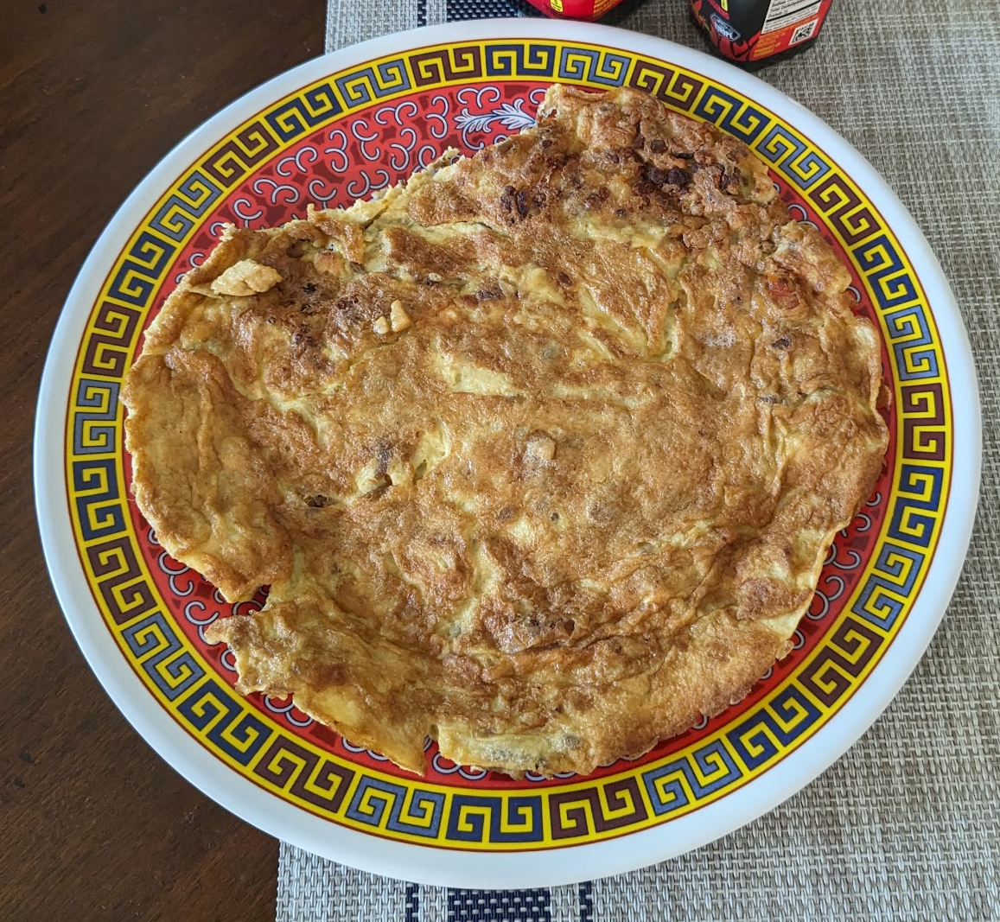

Flat Eggs

Ingredients
- 3-4 eggs, well-beaten
- 2 tsp soy sauce
- 1 tsp Fish sauce
- 1 tsp oyster sauce
- ½ tsp sugar
- ½ tsp white pepper
- 2 tbs neutral-flavored cooking oil (vegetable, peanut, canola)
Directions
- Combine all ingredients in a mixing bowl and mix well.
- Heat the cooking oil in a wok or a non-stick pan over medium heat until it shimmers.
- Pour the egg mixture into the pan and tilt it to cover the surface with egg.
- Cook on one side, moving the pan around to distribute the egg mixture.
- When the first side is done (3-4 minutes), work a spatula under it and turn it completely over.
- Cook the other side for another minute or two and serve.
Michael Fritsche
mbf@fritsche.org